The way to Wraith Man's door. Six backdrops, and three materials (each a floor, platform, spikes, boss door and exit door), all built from his colours. Batch 3 of 3.
Picked by the owner on 7 Nov 2026, in their words: "3a but This level will only be 3 full screen widths wide. beyond this 3 screen wide scrolling, all other platforming and scrolling will be done in the vertical as the player ascends this grave tower. add animated blue flame spirits, significantly increase the unique styles of graves, have a thin fog with clear patches ebb and flow, shifting with player movement like the layered parallax but over the foreground, mildly obscuring the player, platforms, enemies etc but not the flame spirits. periodically there will be a staircase that, at the top, is a one way passable platform that spans the whole level width as checkpoints. all other platforms should have randomized widths no narrower than the current standard platform". So: backdrop 3, the grave tower, with material A, the rotten floorboards, drawn as a climb at the bottom of this board.
How it plays, from the owner's answers: a missed jump drops the player onto whatever is below and the full-width walkways catch any fall (8 Nov 2026: "1a and b"); the boss door is in the upper right ("2"); five walkways, and the camera follows a fall back down but never below the last walkway reached (9 Nov 2026). In the game since 10 Nov 2026, the first area that climbs.
Redone on the owner's ask (6 Nov 2026), with a wider take on "Ghost": six kinds of haunting that games keep coming back to, drawn fresh.
Four photos from the game: the foot of the tower, then standing on walkways 1, 3 and 5. The boss door is at the right end of the top walkway.
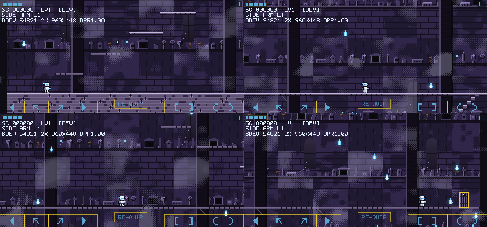
Each is shown behind today's plain pieces, so only the backdrop changes. The strip under it is its pit edge with floors A, B and C in front. The two marked MOVING scroll in layers, the far ones slower; their pictures move.
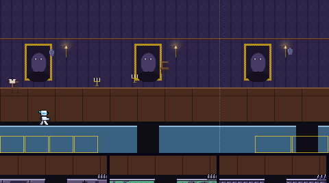
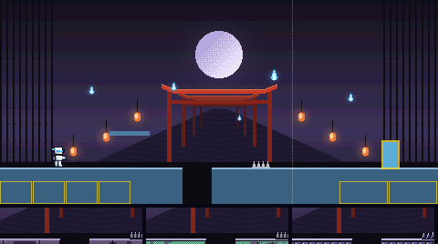
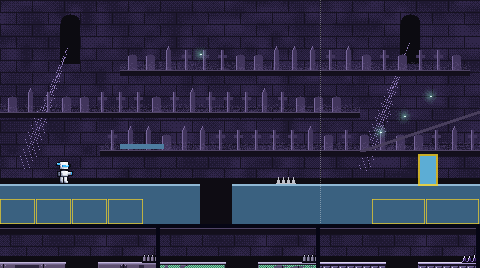
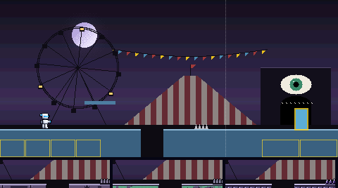
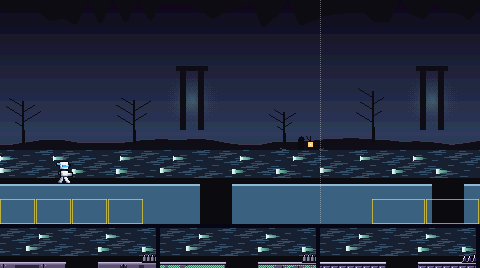
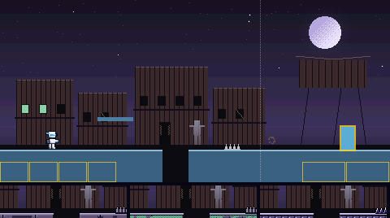
Each shows the floor with a pit, a platform, spikes, the boss door (left) and the exit door (right), in front of today's flat colour. The strip under it is its pit edge against backdrops 1 to 6. The contrast numbers are the worst against any of the six; the game asks at least 2 for the ground, 4.5 for its lit edge and 4.5 for the white player on it.
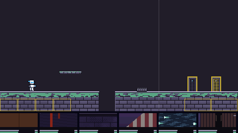
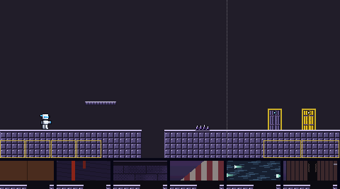
The grave tower, three screens wide, climbed rather than crossed. Its far wall moves at half the camera's speed, ledge on ledge of graves in fifteen kinds now: rounded, pointed, broken and sunken headstones, plain, ringed and wooden crosses, obelisks, an angel, an urn, a pillar, a skull slab, a tomb chest, a mausoleum and lanterns with spirit flames inside. Stone pillars stand nearer, at three quarters speed. The platforms are rotten floorboards from 44 pixels wide (today's standard) to 88, and every few tiers a staircase climbs to a walkway the whole width of the tower: the checkpoint, which you can jump up through. A thin fog drifts over everything faster than the camera, its clear patches opening and closing; the blue flame spirits float above it, never clouded.
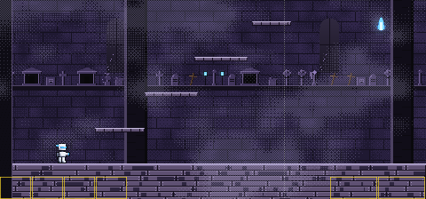
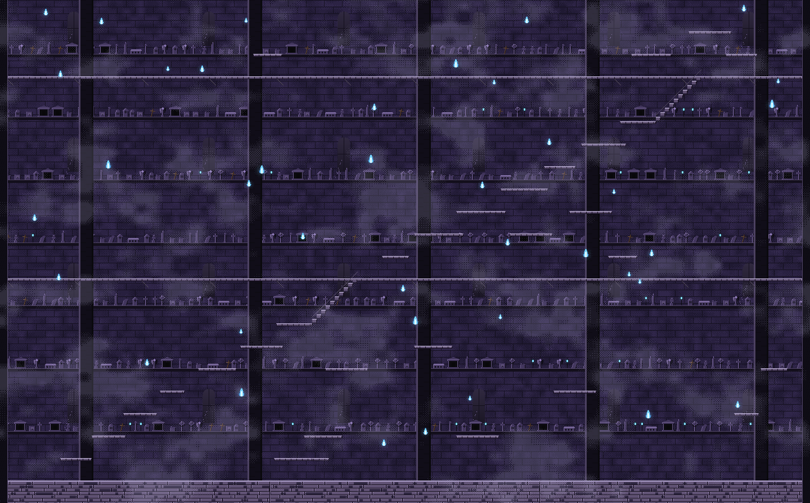